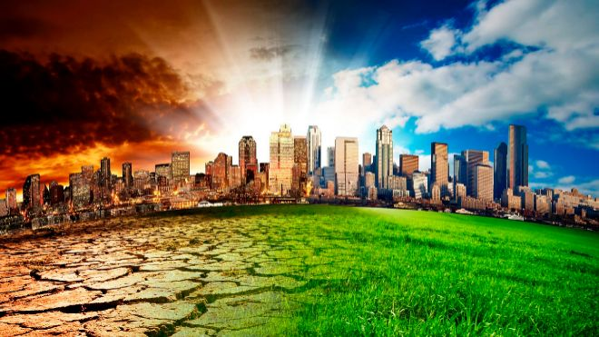

Cambio Climatico
El cambio climático es el mal de nuestro tiempo y sus consecuencias pueden ser devastadoras si no reducimos drásticamente la dependencia de los combustibles fósiles y las emisiones de gases de efecto invernadero.
De hecho, los impactos del cambio climático ya son perceptibles y quedan puestos en evidencia por datos como:
--- La temperatura media mundial ha aumentado ya 1,1°C desde la época preindustrial
--- El período 2015-2019, según la Organización Meteorológica Mundial (OMM), será probablemente el quinquenio más cálido jamás registrado
--- La tasa de subida del nivel del mar ha ascendido a 5 mm al año en el quinquenio 2014 -2019
Mas info
Calentamiento Global
El calentamiento global consiste en el aumento de la temperatura de la tierra, mismo que se refleja en los océanos y la atmósfera principalmente causado por la emisión de gases de efecto invernadero expedidos por la actividad humana.
El calentamiento global ha existido desde siempre, sin embargo, debido a las actividades y emisiones masivas del hombre este fenómeno se ha incrementado, especialmente la quema de combustibles fósiles y los cambios en el uso del suelo, tales como la deforestación, así como varias otras fuentes secundarias.
Los naturales a pesar de estar presentes desde hace miles de años no son suficientes como para realizar cambios climáticos.
Las causas artificiales se refieren principalmente a los gases de efectos invernadero, los cuales son provocados en su mayoría por las emisiones de dióxido de carbono (CO2) y de metano (CH4), aunque existen muchas otras:
--Quema de combustibles fósiles
--Deforestación
--Aumento del vapor de agua en la atmosfera
Efecto Invernadero
El “efecto invernadero” es el calentamiento que se produce cuando ciertos gases de la atmósfera de la Tierra retienen el calor. Estos gases dejan pasar la luz pero mantienen el calor como las paredes de cristal de un invernadero.
En primer lugar, la luz solar brilla en la superficie terrestre, donde es absorbida y, a continuación, vuelve a la atmósfera en forma de calor. En la atmósfera, los gases de invernadero retienen parte de este calor y el resto se escapa al espacio. Cuantos más gases de invernadero, más calor es retenido.
Los científicos conocen el efecto invernadero desde 1824, cuando Joseph Fourier calculó que la Tierra sería más fría si no hubiera atmósfera. Este efecto invernadero es lo que hace que el clima en la Tierra sea apto para la vida. Sin él, la superficie de la Tierra sería unos 60 grados Fahrenheit más fría. En 1895, el químico suizo Svante Arrhenius descubrió que los humanos podrían aumentar el efecto invernadero produciendo dióxido de carbono, un gas de invernadero. Inició 100 años de investigación climática que nos ha proporcionado una sofisticada comprensión del calentamiento global.
Mas info